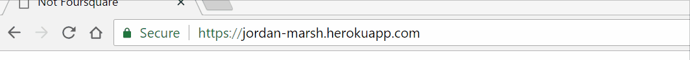

This product is a login/data-entry form. It allows the user to enter a username, along with a latitude and longitude. This data can then be read on another page in order of entry. It utilizes a MongoDB collection to store each individual entry, along with the date of insertion. Finally, an HTML POST request can be used to retrieve data - data retrieval is recorded as well.
I was hired to determine the level of security and privacy provided by the application. This included the likelihood of an attack, the severity of an attack and how easy an attack is to perform upon the website.
The research was broken into two stages. First, I used the website and the developer console to figure out what exactly the HTML forms did. Then, I read the source code in order to determine ways of entry for XSS or other MongoDB vulnerability attacks.
The first phase began with only the developer console and the website. I checked each page's user-input forms, including HTML queries, for possible vulnerabilities. For example, I would change various HTML parameters of the textbox's body in order to attempt to breach the required functionality of the website.
The second phase began when I was satisfied that there was nothing more to be learned from solely sweeping the HTML. After reading the source code of the website and analyzing its usage of MongoDB, I began to test the vulnerability of the database itself, and the likelihood that a malicious agent could insert Javascript to manipulate or otherwise breach the security of the database. To this end, I used a command line tool called curl to send various HTML requests to the site, designed in such a way to abuse the MongoDB vulnerabilities.
Phase one revealed 2 vulnerabilities. The login page could be manipulated to allow usernames much longer than 10 characters. Once this was done, any arbitrary value could be sent to the database. As such, videos, sound or links to other websites could be placed on the landing page, potentially harming users or breaking other websites that use the data this website provides.
In conjunction with the first vulnerability, any arbitrary Javascript script could be placed into the database. Thus, every time the landing page is loaded, arbitrary Javascript code is executed on the server side, and potentially on the client side as well. This could be as innocuous as a pop-up ad, or as devastating as an entire database wipe - every single time a client views the database data.
While I could not personally replicate this, I theorize that with enough clever code or workarounds, an entire separate webpage can be presented to the user every time our webpage is accessed. This is an extreme vulnerability, as it could render us liable to lawsuit due to damages resulting from computer viruses downloaded or data leaked to unknown third parties.
Severity: Medium {annoyance to medium-sized problem}
Description: Unwanted login data, up to n characters
Location: https://jordan-marsh.herokuapp.com/entry.html, first form
Resolution: In app.post('/submit', ... ), verify that request.body.login is less than 10 characters long {as desired in HTML fragment}

Severity: High {potential danger to user}
Description: Able to insert links in the landing page
Location: https://jordan-marsh.herokuapp.com/entry.html, first form
Resolution: In app.post('/submit', ...), either sanitize the data to remove HTML tags, or disallow any login name that contains HTML tags

Severity: EXTREME {potential loss of data, loss of income and damage to both user and company}
Description: Able to insert arbitrary code in the database
Location: https://jordan-marsh.herokuapp.com/entry.html, first form
Resolution: In app.post('/submit', ...), either sanitize the data to remove HTML tags, or disallow any login name that contains HTML tags
The extent of the vulnerability poses a threat to both the company and its users. It is recommended that the site is IMMEDIATELY shut down and has all known vulnerabilities patched. Otherwise, an unknown amount of damage, data leaking and potential loss of income could occur. While most of the vulnerabilities are very simple to fix, it is important to think like a malicious agent whilst designing a website - always remain vigilant of possible security vulnerabilities! A majority of the issues could be solved in under 45 minutes.